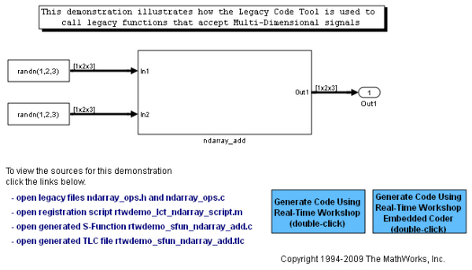
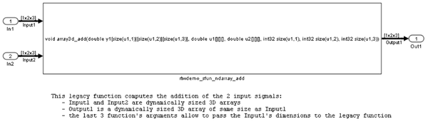

Multi-Dimensional Signals
This demo shows you how to use the Legacy Code Tool to integrate legacy C functions with Multi-Dimensional Signals.
The Legacy Code Tool allows you to:
- Provide the legacy function specification,
- Generate a C-MEX S-function that is used during simulation to call the legacy code, and
- Compile and build the generated S-function for simulation.
- Generate a block TLC file and optional rtwmakecfg.m file that is used during code generation to call the legacy code.
Contents
- Providing the Legacy Function Specification
- Generating S-Functions for Use During Simulation
- Compiling the Generated S-Function for Simulation
- Generating a TLC Block File for Code Generation
- Generating an rtwmakecfg.m File for Code Generation
- Generating a masked S-Function block for calling the generated S-Function
- Demoing the Generated Integration with Legacy Code
Providing the Legacy Function Specification
All functions provided with the Legacy Code Tool take a specific data structure or array of structures as the argument. The data structure is initialized by calling the function legacy_code() using 'initialize' as the first input. After initializing the structure, you have to assign its properties to values corresponding to the legacy code being integrated. For detailed help on the properties, call legacy_code('help'). The prototype of the legacy functions being called in this demo are:
void array3d_add(real_T *y1, real_T *u1, real_T *u2, int32_T nbRows, int32_T nbCols, int32_T nbPages);
where real_T is a typedef to double, and int32_T is a typedef to a 32-bit integer. The legacy source code is found in the files ndarray_ops.h, and ndarray_ops.c.
% rtwdemo_sfun_ndarray_add def = legacy_code('initialize'); def.SFunctionName = 'rtwdemo_sfun_ndarray_add'; def.OutputFcnSpec = ['void array3d_add(double y1[size(u1,1)][size(u1,2)][size(u1,3)], ',... 'double u1[][][], double u2[][][], ' ... 'int32 size(u1,1), int32 size(u1,2), int32 size(u1,3))']; def.HeaderFiles = {'ndarray_ops.h'}; def.SourceFiles = {'ndarray_ops.c'}; def.IncPaths = {'sldemo_lct_src'}; def.SrcPaths = {'sldemo_lct_src'};
where y1 is a 3-D output signal of same dimensions as the 3-D input signal u1. Note that the last 3 arguments passed to the legacy function correspond to the number of element in each dimension of the 3-D input signal u1.
Generating S-Functions for Use During Simulation
The function legacy_code() is called again with the first input set to 'sfcn_cmex_generate' in order to automatically generate C-MEX S-function according to the description provided by the input argument 'def'. This S-function is used to call the legacy function in simulation. The source code for the S-function is found in the file rtwdemo_sfun_ndarray_add.c.
legacy_code('sfcn_cmex_generate', def);
Compiling the Generated S-Function for Simulation
After the C-MEX S-function source files are generated, the function legacy_code() is called again with the first input set to 'compile' in order to compile the S-function for simulation with Simulink®.
legacy_code('compile', def);
### Start Compiling rtwdemo_sfun_ndarray_add
mex('rtwdemo_sfun_ndarray_add.c', 'B:\matlab\toolbox\simulink\simdemos\simfeatures\sldemo_lct_src\ndarray_ops.c', '-IB:\matlab\toolbox\simulink\simdemos\simfeatures\sldemo_lct_src', '-IC:\Temp\R2010bd_251_3840\tp0131b8c4_8885_42d9_84ce_432a16cc3511')
### Finish Compiling rtwdemo_sfun_ndarray_add
### Exit
Generating a TLC Block File for Code Generation
After the S-function is compiled and used in simulation, the function legacy_code() can be called again with the first input set to 'sfcn_tlc_generate' in order to generate a TLC block file to support code generation through Real Time Workshop. Code generation will fail if the TLC block file is not created and you try to generate code for a model that includes the S-function. The TLC block file for the S-function is: rtwdemo_sfun_ndarray_add.tlc.
legacy_code('sfcn_tlc_generate', def);
Generating an rtwmakecfg.m File for Code Generation
After the TLC block file is created, the function legacy_code() can be called again with the first input set to 'rtwmakecfg_generate' in order to generate an rtwmakecfg.m file to support code generation through Real Time Workshop. The file is needed only if the required source and header files for the S-functions are not in the same directory as the S-functions, and you want to add these dependencies in the makefile produced during code generation.
legacy_code('rtwmakecfg_generate', def);
Generating a masked S-Function block for calling the generated S-Function
After the C-MEX S-function source is compiled, the function legacy_code() can be called again with the first input set to 'slblock_generate' in order to generate a masked S-function block that is configured to call that S-function. The block is placed in a new model and can be copied to an existing model.
% legacy_code('slblock_generate', def);
Demoing the Generated Integration with Legacy Code
The model rtwdemo_lct_ndarray shows integration with the legacy code. The subsystem ndarray_add serves as a harness for the call to the legacy C function.
open_system('rtwdemo_lct_ndarray') open_system('rtwdemo_lct_ndarray/ndarray_add') sim('rtwdemo_lct_ndarray') 